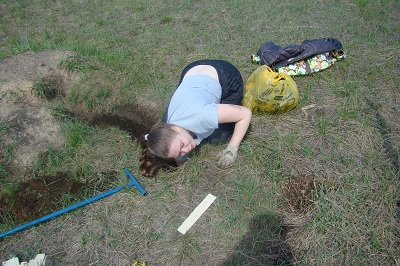
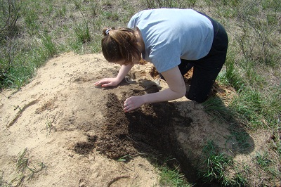
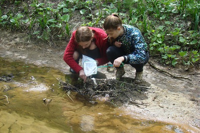
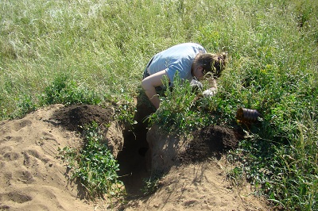
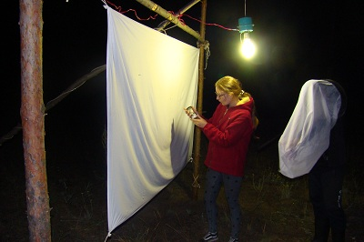
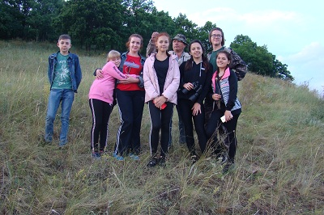
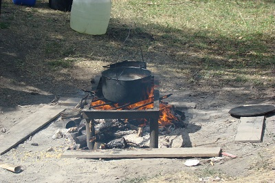

|
2019 год
В мае - июле 2019 года проходили выеэдные экологические экспедиции в
составе учащихся МБОУ гимназии № 1,
руководитель Иванов С.В. Экспедиции проходили на участке ООПТ
Двориковского водно-лесного комплекса им. И.А. Коровина,а также как и в
прошлом году
в Неверкинском районе Пензенской области. Были задействованы ООПТ
"Шуро-Сиран" и участок заповедника "Приволжская лесостепь" -
"Кунчеровская лесостепь". Экспедиции проводились с целью мониторинга
полученных в прошлом году данных. На территории ООПТ "Шуро-Сиран"
школьники работали вместе со студентами ЕГФ пединститута ПГУ, которые
проходили практику со своими руководителями Смирновым Д.С., Чернышевым
В.А., Полумордвиновым О.А. Были
собраны новые данные для написания исследовательских проектов.
Проводились
многочисленные экскурсии по территории ООПТ, с целью ознакомления с
представителями флоры и фауны данных участков. Ребята
загорели,набрались сил для нового учебного года. На территории
"Кунчеровской
лесостепи" работали в тесном контакте с Лебежинской И.П. и егерями
заповедника. За что отдельное спасибо директоу заповедника Добролюбову
А.Н. Ученица 10-го класса Юдина Ксения продолжала сбор материала в
норах
сурка. Также проводились исследования фауны моллюсков реки Труёв
в пределах города Кузнецка с целью написания проекта. Этим занимались
учащиеся 8-х классов Мерзлова Ульяна и Юртаева Алиса.

Юдина Ксения устанавливает ловушки на
беспозвоночных
Вид на колонию сурков в Кунчеровской
лесостепи
Эх, нелегкая эта работа биолога
И требует терпения и аккуратности

Юдина Ксения за разбором взятых проб
А вот и первый экземпляр
В Кунчеровской степи зацвели первоцветы,
проснулись опылители
Весенняя красота
Есть новый материал для изучения!
Интересный экземпляр выполз
Куда ж руководитель без воспитанников
Готовится к определению
Мерзлова Ульяна и Юртаева Алиса
описывают экосистему реки Труёв
Ловись моллюск большой и маленький

Что то тут спряталось
Осматриваем все подводные предметы
Вода в Труёве заметно очистилась

Не спрячутся от нас мягкотелые
Ну, и главный биолух тут же
Ближе к центру города вода заметно
грязнее
Вот и видовой состав изменился
Небольшой отдых не помешает
Новые находки
Иди сюда - поглажу и отпущу
Воды Труёва в 2019 году
Сурки нагуливают жир в Кунчеровской
лесостепи

В мае-июне Юдина Ксения собирала
материал для своего проекта
Кормовая тропа сурков в Кунчеровской
лесостепи
Жарко и мошкара донимает
В Кунчеровской
лесостепи цветёт ковыль
Любопытный сурок
Сейчас я тебя достану
Вот они мои любимые букашечки!

Ура! Взята последняя проба!
Всем привет из Кунчеровской
лесостепи
Юртаева Алиса - А что у нас тут
новенького?

Труёв в центральной части города
Встречается один и тот же вид
Труёв в среднем течении
Один и тот же вид
А вот и любимый Шалкеевский пруд
Первая экскурсия - знакомство с
гидробионтами
А вот и первые находки
Будущие биологи и медики
Возвращаемся в лагерь
Вот и родные вигвамы
Родной очаг
И редкий вид рядом с кордоном
Экскурсия по суходольным склонам
И первый объект - гадюка
Совсем недавно здесь был лес
Фото на память - молодые и задорные
Грязнов Андрей за сбором материала для
проекта

Продолжатель проекта - Уханова Мария
Вот и консультант проявился
Посиделки у костра со страшными сказками
и песнями
Экспедиция в ООПТ "Шуро-Сиран".
Первая экскурсия
Остатки колонии сурков
Подъем на Белую гору

Фото участников на память. Белая гора
Вид на лагерь с Белой горы
А здесь поработал бобр
Экскурсия по окрестностям урочища
Грязнов Андрей и Юдина Вика за ночным
ловом чешуекрылых
Любимые палатки - как хорошо вытянуть
ноги после длительной экскурсии
Местный обряд-молебен о ниспослании дождя
На молебне местный хранитель - Щербаков
Михаил
Голодные школяры в ожидании завтрака.
Последний день экспедиции

Наверное, кашка будет
Руководитель экспедиции - Иванов С.В.
2001 год
2002 год
2003 год
2004 год
2005 год
2006 год
2007 год
2009 год
2010 год
2011 год
2012 год
2013 год
2013 год
2014 год
2015 год
2016 год
2017 год
2018 год
2019 год
| 


{kind=link}
{kind=link}
{kind=link}
{kind=link}
{kind=link}
{kind=link}
{kind=link}
{kind=link}
{kind=link}
{kind=link}
{kind=link}
{kind=link}
{kind=link}
{kind=link}
{kind=link}
{kind=link}
{kind=link}
{kind=link}
{kind=link}
{kind=link}
{kind=link}
{kind=link}
{kind=link}
{kind=link}
{kind=link}
{kind=link}
{kind=link}
{kind=link}
{kind=link}
{kind=link}
{kind=link}
{kind=link}
{kind=link}
{kind=link}
{kind=link}
{kind=link}
{kind=link}
{kind=link}
{kind=link}
{kind=link}
{kind=link}
{kind=link}
{kind=link}
{kind=link}
{kind=link}
{kind=link}
{kind=link}
{kind=link}
{kind=link}
{kind=link}
{kind=link}
{kind=link}
{kind=link}
{kind=link}
{kind=link}
{kind=link}
{kind=link}
{kind=link}
{kind=link}
{kind=link}
{kind=link}
{kind=link}
{kind=link}
{kind=link}
{kind=link}
{kind=link}
{kind=link}